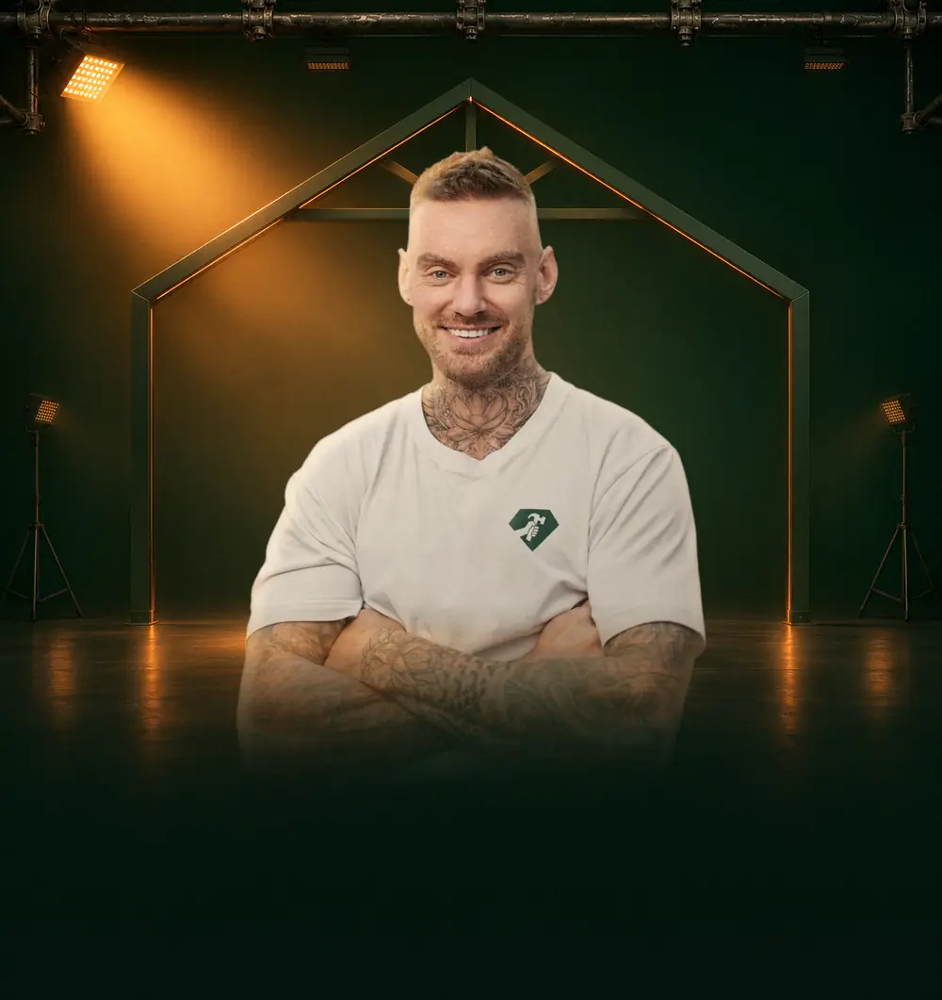
128+ mio. kr. skabt for håndværkere som dem her
400+ virksomheder har fået hjælp · 8+ års erfaring
Du har måske rigeligt
at lave lige nu?
Men ved du, hvor arbejdet skal komme fra, når vinteren rammer?
- NovemberTravlt. Ordrebogen er fyldt.
- DecemberDu stopper med at tænke på nye kunder.
- JanuarFrost og regn skubber udendørsopgaverne. Kunderne holder igen.
- FebruarDin kalender tynder ud. Nu skal der skaffes kunder, lige når det er sværest.
Vinteren kommer hvert år. Men mange laver den samme fejl: de stopper med at skaffe kunder, når der er travlt.
Målet er fuld kontrol over ordrebogen året rundt. Det viser Stefan dig den 30. november.
Programmet
Det her viser Stefan dig
på én aften
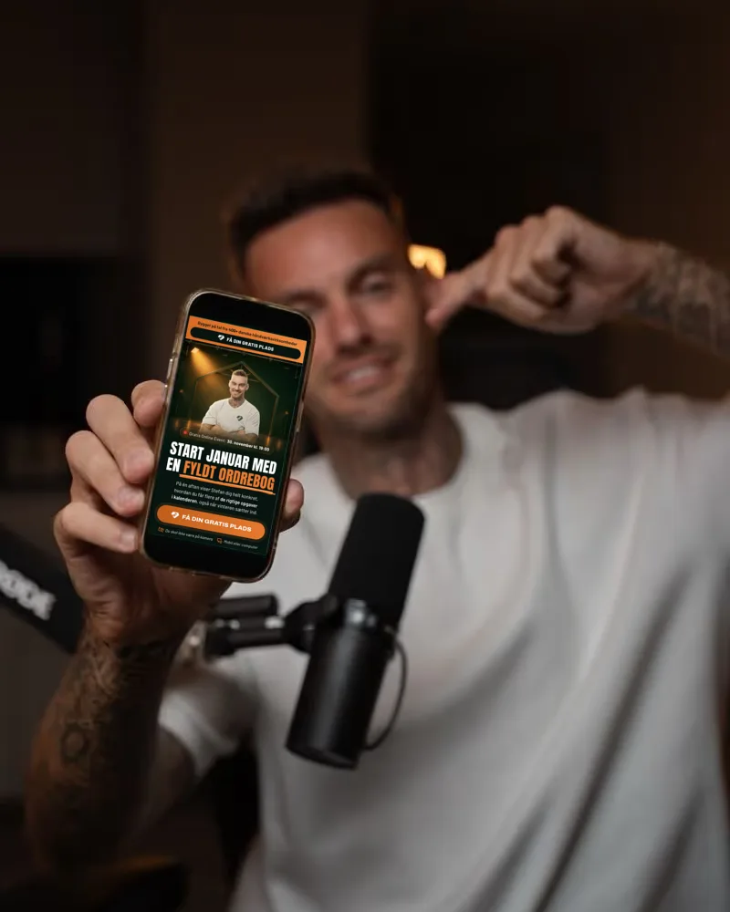
Sådan fylder du ordrebogen, også i de stille måneder
Mandag kl. 19:00Online
- Skab selv en stabil tilgang af de opgaver, du helst vil have, uanset sæson.
- Se, hvorfor du kan være booket måneder frem og stadig tjene for lidt.
- Forstå, hvorfor flere henvendelser ikke er det samme som flere kunder.
- Se rigtige tal fra rigtige virksomheder i håndværksbranchen, og hvad der faktisk skaber kunder.
Resultater
Håndværkere der har fået
fyldt ordrebogen
Rigtige håndværkere fortæller selv, hvad der skete. Tryk på en video, og swipe for at se flere.
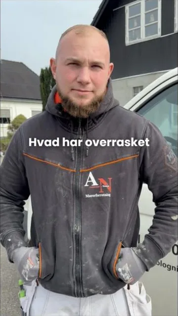
Opgaver for 4,5 mio.på 4 månederMathias Kjær
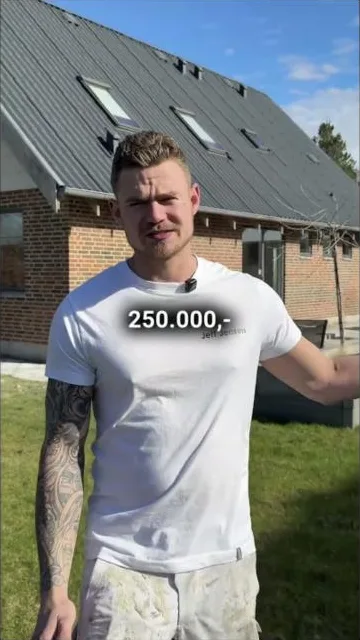
1 mio. kr. +72 henvendelser
på én måned
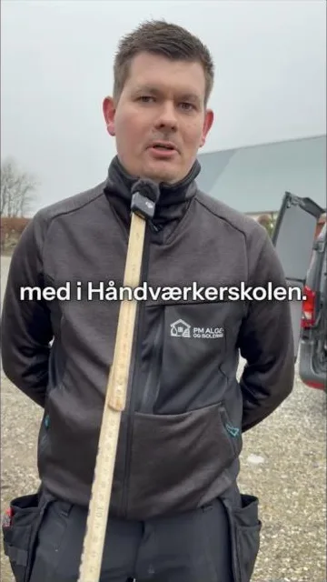
94 henvendelserpå 1,5 måned
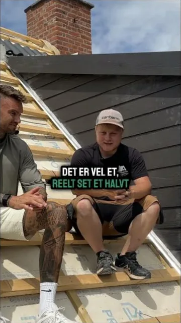
Opgaver forover 1 mio. kr.
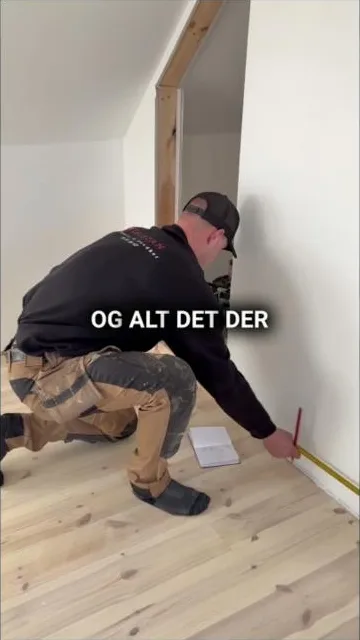
Over 4 mio. kr.i omsætning
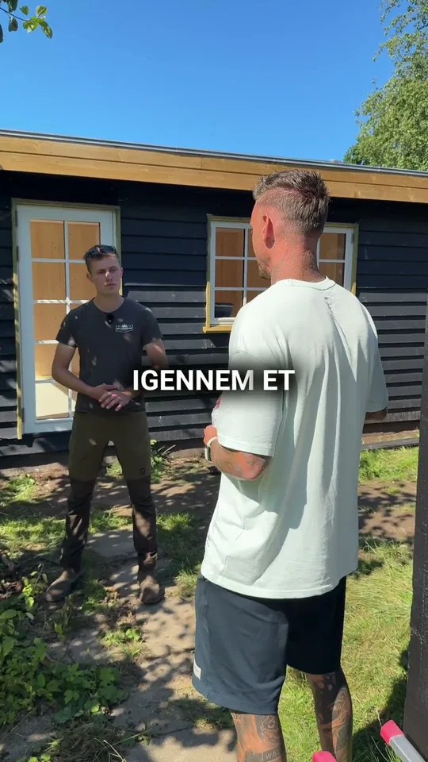
Bjørn fraDK Landskab
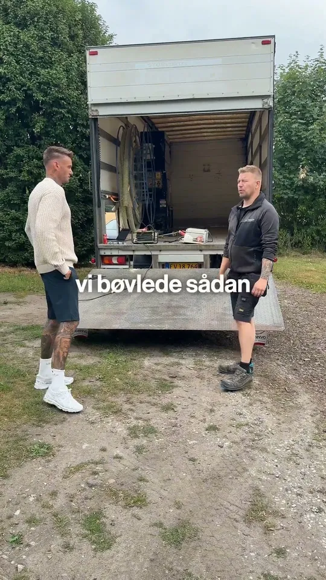
GestenMultiserviceFliserens og isolering
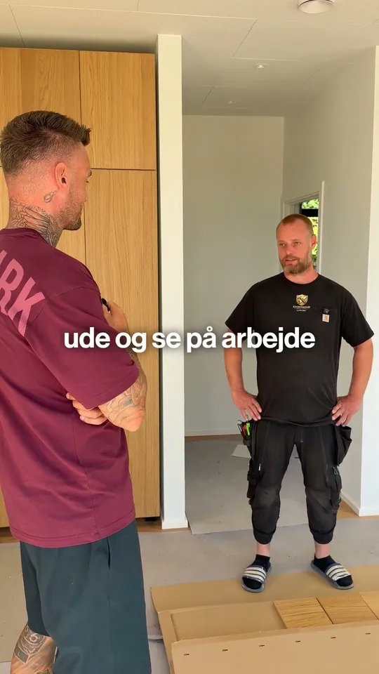
GyldenskjoldTømrer
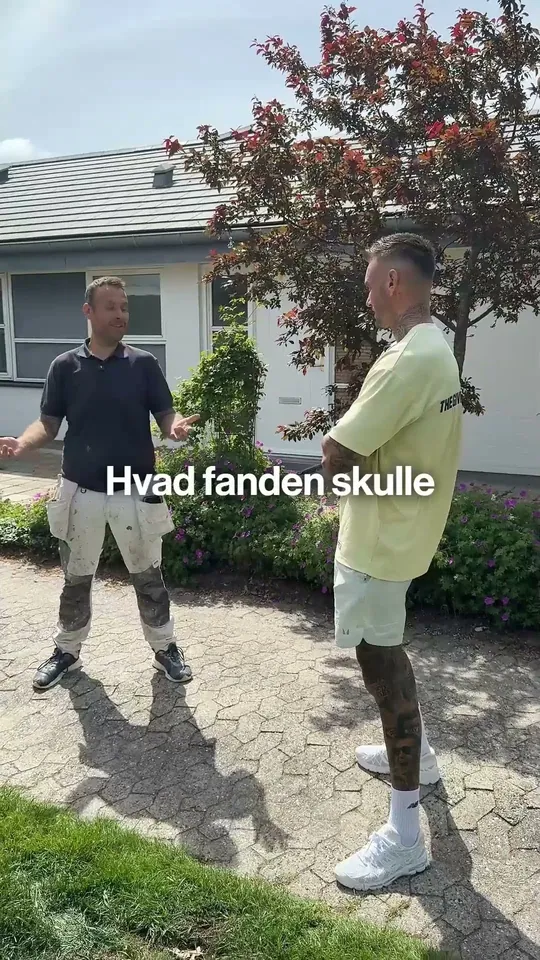
KTN BygAalborg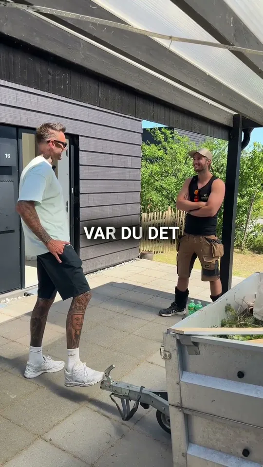
Lindtoft BygSjælland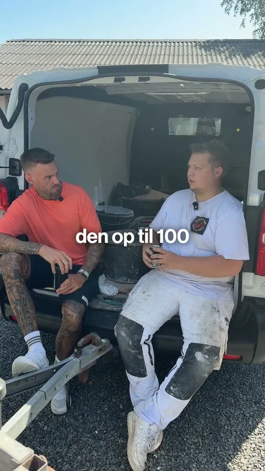
Pedersen BygMurermester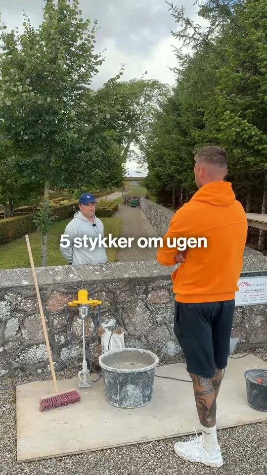
Nørhald BygMichael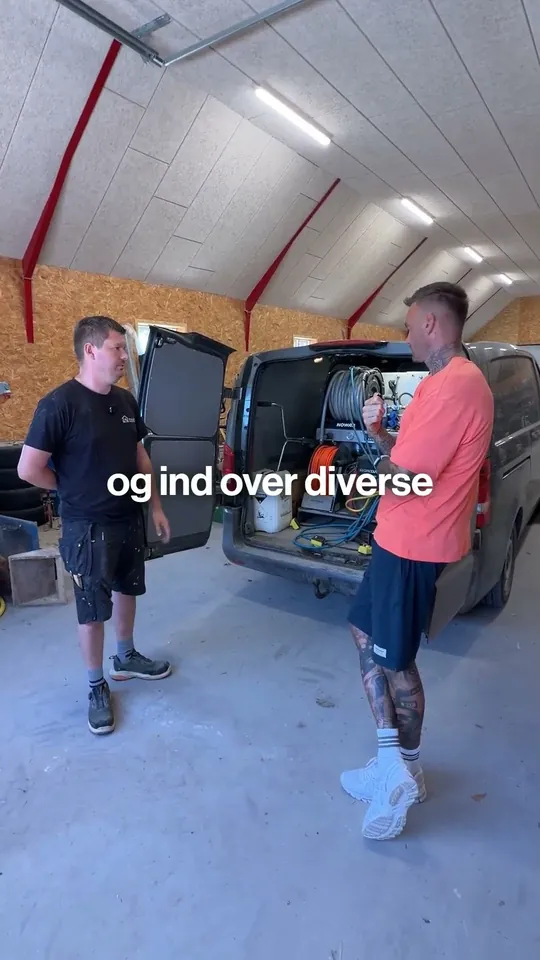
PM Alge ogIsoleringPeter
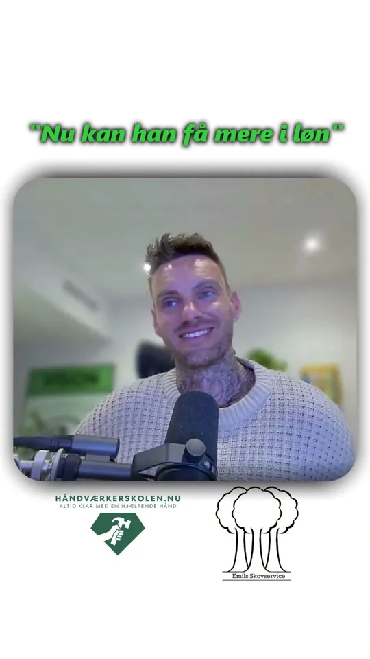
Det bedste åri 9 årEmils Skovservice
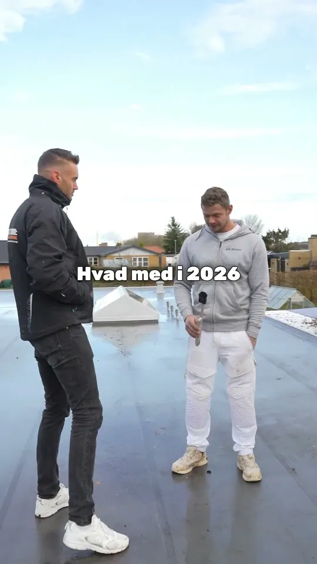
De opgaver mangodt kan li' at lave
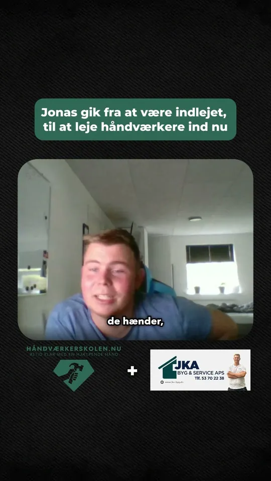
Et par månederefter startJonas
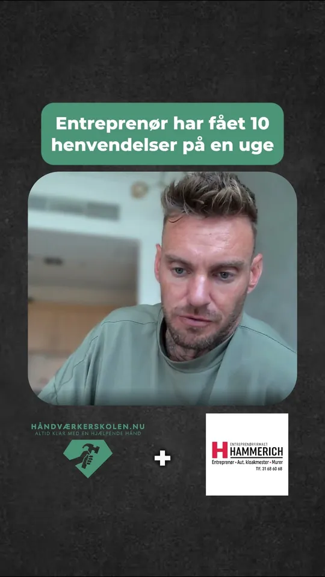
Gode opgaveri bogenEntreprenørfirma
Det siger håndværkerne selv
“Nu er det ik mig der søger arbejde, nu er det kunderne der henvender sig til mig.”
“Vi har fået så mange henvendelser, at vi faktisk måtte skrue ned for annoncebudgettet, fordi vi ikke kunne følge med.”
“Og dem der tvivler på om det kan passe at det er så godt som de siger i videoen. Så kan jeg kun sige at det gør det.”
“Har aldrig haft så mange kunder som jeg har nu 👍”
“Firmaet har vækstet til dobbelt størrelse som var målet fra start, så det må siges at være lykkedes.”
“Prisen er lidt pebret, men alt i alt virker det godt :) min omsætning er i hvert fald øget efter reklamerne.”
“Det bedste jeg længe har gjort!!! Hjælpen er nær, snakken er fri”
“Generelt har vi haft vores bedste år, ud af de 9 år vi har drevet virksomhed.”
“Siden jeg begyndte at samarbejde med håndværkerskolen, er der virkelig sket noget. De har hjulpet mig med at få flere og bedre kundehenvendelser.”
“Stefan er en fantastisk mentor. Han er altid der for en, når man har brug for et godt råd”
“Kan helt klart anbefale Håndværkerskolen, det er det perfekte skub til din virksomhed”
“Kundehenvendelser er ingen mangelvare efter jeg startede hos dem.”
“Har aldrig i mit liv troet det kunne virke så godt.”
“Det er fantastisk at have et team bag ryggen som er både engageret og går op i ens forretning”
“Ydermere kommer man også ind i et fællesskab hvor der deles erfaringer og gode råd.”
“Det virker super fint - både at få styr på dit kontor arbejde/Ordrestyring samt henvendelser”
Hvem er Stefan?
Han har stået,
hvor du står
Han startede ikke som ekspert i markedsføring. Han startede som murer.
-
Starten
Murer med mørtel på hænderne
Kunder der skulle ringes til, tilbud der skulle sendes, og spørgsmålet om, hvor næste opgave skulle komme fra.
-
10+ år
Eget murerfirma med 6 ansatte
Millionomsætning og et anerkendt facadefirma, bygget op med hårdt arbejde.
-
Da kroppen sagde fra
Håndværkerskolen bliver til
Han begynder at hjælpe andre håndværkere med det, mange aldrig lærer: at bygge en forretning, der ikke er overladt til tilfældighederne.
-
I dag
400+ virksomheder hjulpet
128+ mio. kr. skabt for kunderne og 23 mio.+ visninger på sociale medier. Nu med et helt hold bag sig og Byggers, der samler kunder, tilbud og opgaver ét sted.
Kun for dig, der er med live
Optagelsen, og vi byggerdin hjemmeside gratis
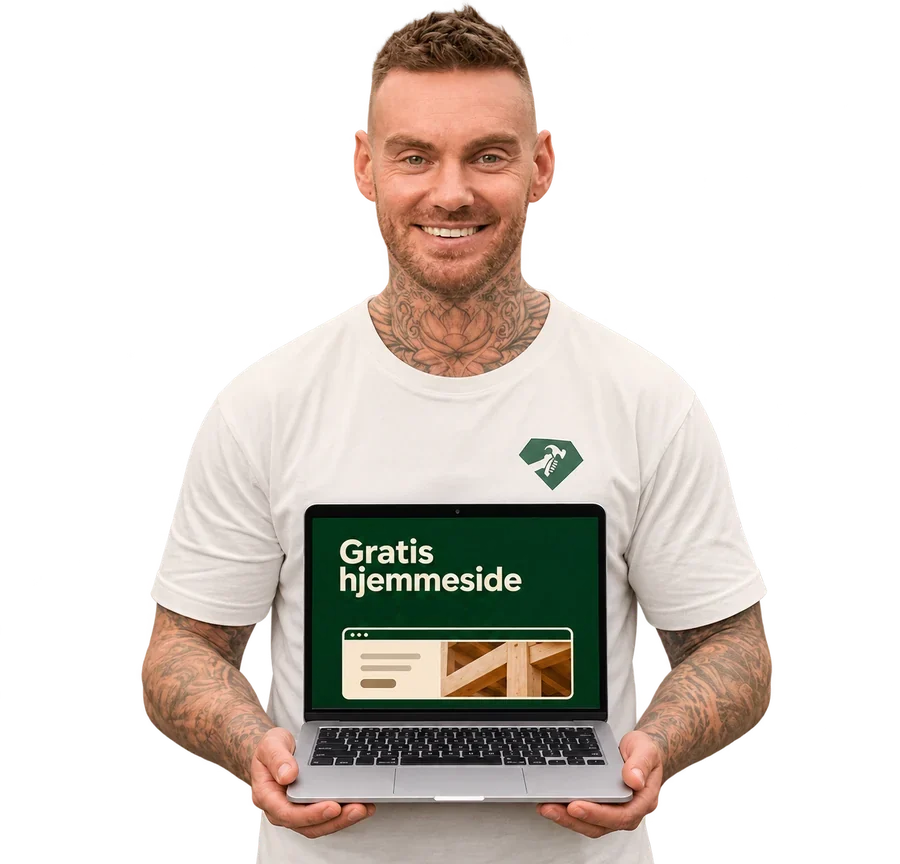
Du får optagelsen bagefter, så du kan se det hele igen. Og vi bygger din hjemmeside gratis. Du betaler kun 99 kr./md. for domæne og hosting.
30. novemberKl. 19:00Ca. 1 timeOnlineGratisLinket kommer på SMS
Spørgsmål og svar
Før du
tilmelder dig
Er det for mig?
Ja, hvis du har din egen virksomhed i håndværksbranchen eller er ved at starte op. Det gælder alle fag, og uanset om du er alene eller har ansatte.
Hvorfor er det gratis?
Stefan vil hellere vise, hvad der virker, end bare fortælle om det. Nogle af dem, der ser med, vælger bagefter at arbejde videre med Håndværkerskolen.
Er det et salgsmøde?
Nej. Du får hele indholdet, også selvom du aldrig køber noget. Til sidst fortæller Stefan kort, hvordan du kan arbejde videre med Håndværkerskolen, hvis du vil.
Hvordan ser jeg med?
Du får et link på SMS. Det åbner direkte i din browser, så du skal ikke downloade noget eller oprette en konto. Det virker på både mobil og computer, men på en computer får du bedst overblik over tallene.
Kan andre se mig?
Nej. Du er ikke på kamera og skal ikke sige noget. Du ser bare med.
Hvad hvis jeg ikke kan den aften?
Vær med live, hvis du overhovedet kan. Det er kun dem, der er med live, der får optagelsen bagefter, og vi bygger deres hjemmeside gratis. Du betaler kun 99 kr./md. for domæne og hosting.
Start januar
med en fyldt ordrebog
- Én aften med Stefan: sådan skaffer du selv de opgaver, du helst vil have
- Rigtige tal fra rigtige virksomheder i håndværksbranchen
- Kun for dig, der er med live: optagelsen, og vi bygger din hjemmeside gratis (99 kr./md. for domæne og hosting)
- Hvornår
- Mandag 30. nov.
kl. 19:00 - Hvor
- Online, linket kommer på SMS
- Pris
- Gratis
- Hvem
- Virksomheder i håndværksbranchen
Du skal ikke være på kameraMobil eller computer